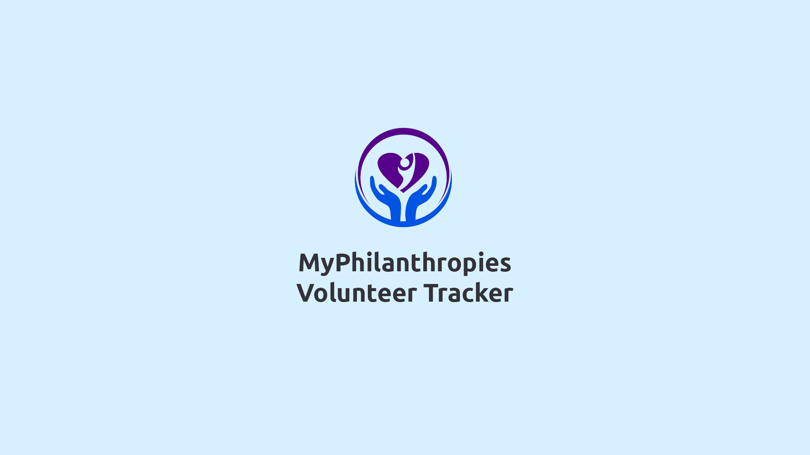
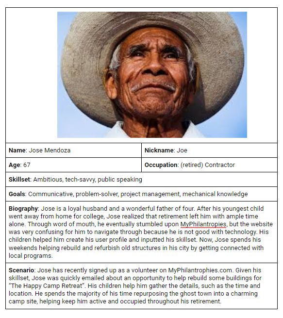
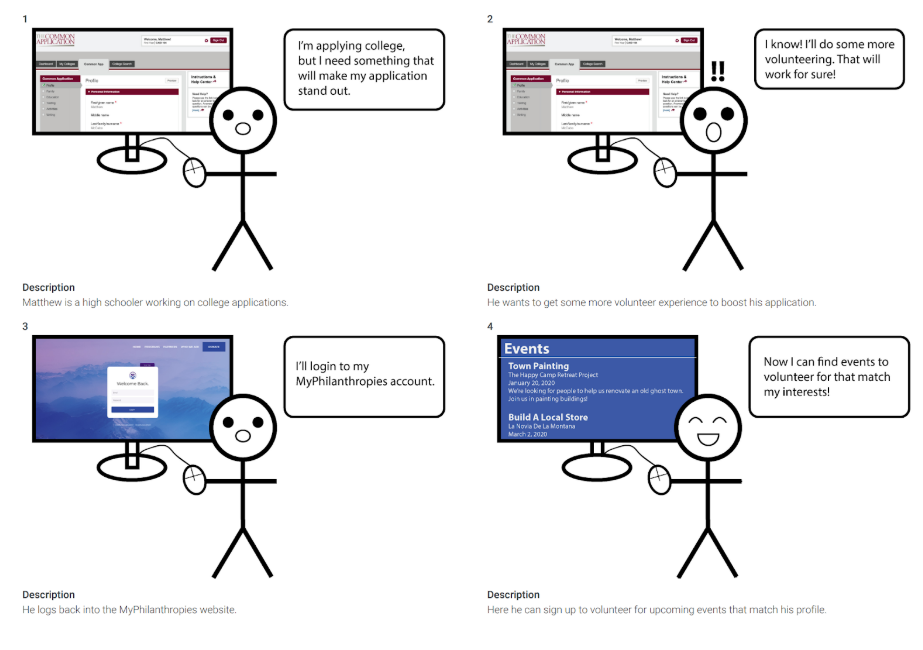
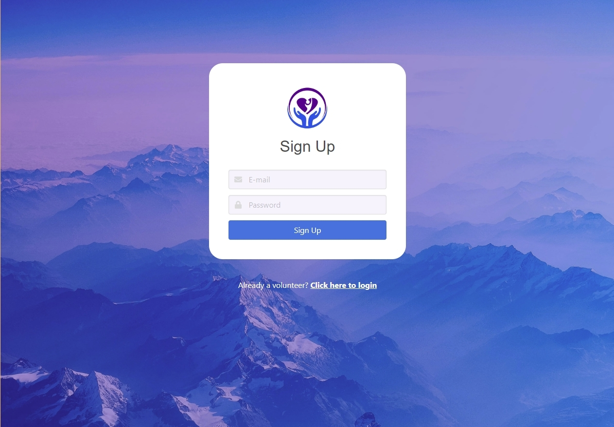
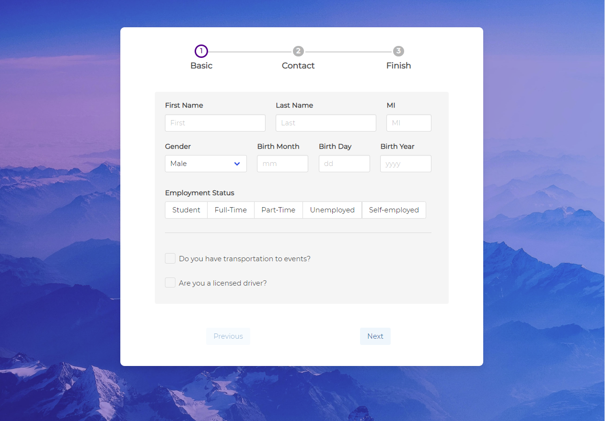
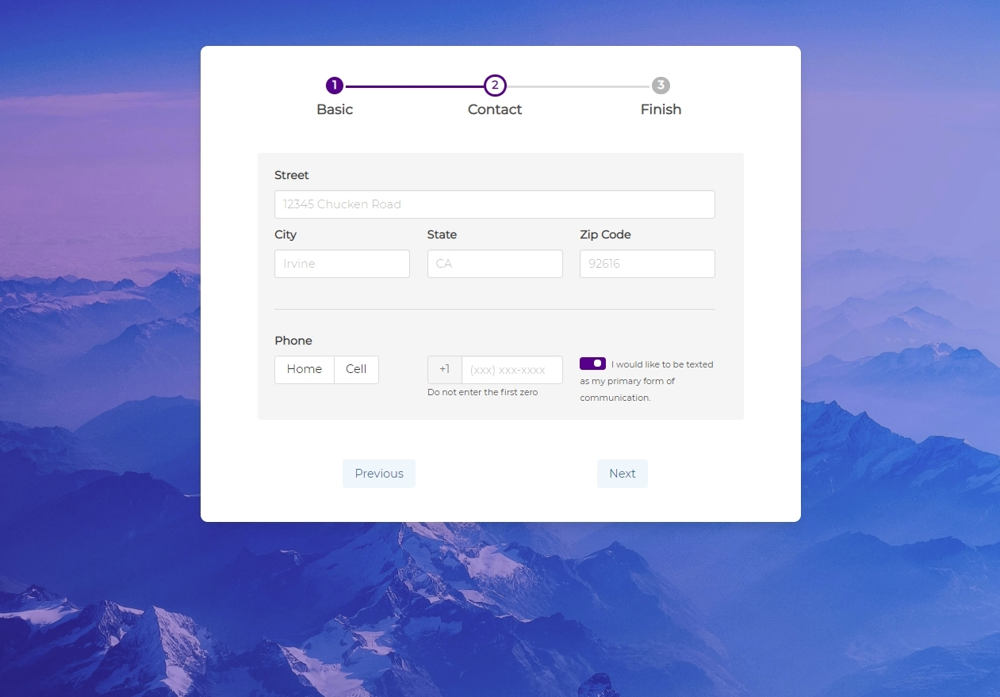
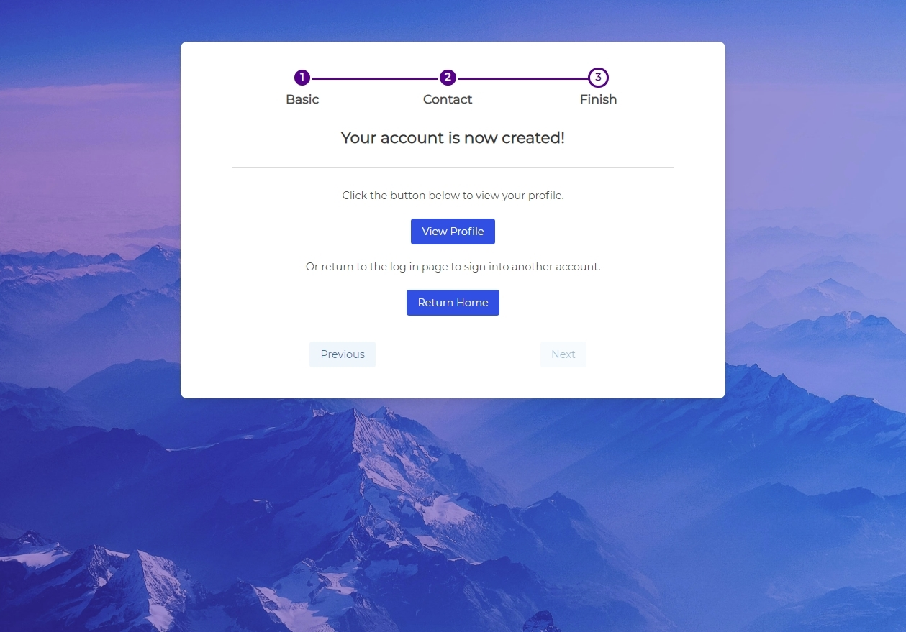

<html lang="en"></html>
<head>
    <meta charset="utf-8">

    <title>Online Portfolio</title>
    <meta name="viewport" content="width=device-width, initial-scale=1.0">
    
    
    <!--Custom Style Sheet-->
    <link rel="stylesheet" href="bootstrap-4.5.0-dist/css/bootstrap.min.css">
    <link rel="stylesheet" href="experiment-3.css">
    <!--Custom Icon-->
    <link rel="icon" href="assets/logo_AAW_icon.ico">
    <!--Custom Text-->
    <link href="https://fonts.googleapis.com/css2?family=Ubuntu:wght@300;400;500;700&display=swap" rel="stylesheet">
    <!--Animate.css-->
    <link
    rel="stylesheet"
    href="https://cdnjs.cloudflare.com/ajax/libs/animate.css/4.0.0/animate.min.css"
  />
    <!--Font Awesome Icons-->
    <link rel="stylesheet" href="fontawesome-free-5.13.0-web/css/all.min.css">
    <!--jQuery and Bootstrap-->
    <script
    src="https://code.jquery.com/jquery-3.5.1.min.js"
    integrity="sha256-9/aliU8dGd2tb6OSsuzixeV4y/faTqgFtohetphbbj0="
    crossorigin="anonymous"></script>
    <script src="bootstrap-4.5.0-dist/js/bootstrap.min.js"></script>
    <script src="bootstrap-4.5.0-dist/js/bootstrap.bundle.min.js"></script>
    <script src="bootstrap-4.5.0-dist/js/bootstrap.min.js.map"></script>
    
    <!--Custom JavaScript-->
    <script src="experiment-3.js"></script>
</head>
<body id="background-color">
  <div class="bg-pastel-blue spaces-in-between">
    
  </div>
  <div class="container-fluid">
    <div class="row">
      <div class="col-md-3"></div>
      <div class="col-md-6 animate__animated animate__fadeInUp">
        <!-- Background information -->
        <div class="smaller-space-in-between">
          <h1 class="blue-title name-head">Background</h1>
          <p class="date-text">September 2019-December 2019</p>
          <p class="write-up-text">
            MyPhilanthropies is a non-profit organization based in Irvine, California. 
            They connect philanthropy groups with interested volunteers to promote cooperation
            between like-minded people.
          </p>
          <p class="write-up-text">
            When my team and I partnered up with MyPhilanthropies, they were looking for a way to expand their network.
            However, they needed to streamline a lot of their operations because they had a fairly small team running
            the organization.
          </p>
          <p class="write-up-text">
            In this project, I worked as a UX designer and front-end developer. For ten weeks, we collaborated to design and develop a web application
            that would make registering and tracking volunteers for philanthropy groups easier.
          </p>
        </div>
        <!-- Brainstorming -->
        <div class="smaller-space-in-between">
          <h1 class="blue-title name-head">Research</h1>
          <p class="write-up-text">
            We relied on two employees to get the gist of the current system in place. Each philanthropy group within MyPhilanthropies' network
            hosted their own set of events that needed volunteers with certain skills. For example, one project required
            house building skills and manual labor. They needed to filter out eligible volunteers in their network, which became more 
            difficult as their network grew bigger.
          </p>
          <p class="write-up-text">
            After our initial elicitation meeting with our two stakeholders, my team and I created multiple personas that would serve
            as our userbase. Meet Jose, our older member.
          </p>
          <div class="d-flex justify-content-center mt-5 mb-5">
            
          </div>
          <p class="write-up-text">
            What we learned from Jose is to make signing up for events easier. Most of their userbase
            are older and described as "afraid of tech". We needed to create a seamless user flow that 
            made registration for volunteering and seeking out events to participate in easy on the user side
            with appropriate signals and affordances.
          </p>
          <p class="write-up-text mb-5">
            Our next step was to create user stories based on actions our personas needed to accomplish their user flow.
            Below, we created a UML diagram with our most important actors: volunteers, administrators, and AWS (the service that we would build our website around).
          </p>
          <div class="d-flex justify-content-center">
            
          </div>
          <p class="write-up-text mb-5">
            As our clients were not technologically literate, we had to convert our UML diagrams into storyboards which
            walked them through the system that we had in mind. One of our storyboards highlighted a highschooler named 
            Matthew who wanted to volunteer as an extracurricular to boost his college admission chances.
          </p>
          <div class="d-flex justify-content-center">
            
          </div>
          <p class="write-up-text mt-5">
            After presenting our research and gotten the approval to move forward with our design, we started our development
            phase.
          </p>
        </div>
        <!-- Development -->
        <div class="smaller-space-in-between">
          <h1 class="blue-title name-head">Development</h1>
          <p class="write-up-text">
            Our development phase lasted eight weeks, for a total of four sprints in two week intervals. 
            We created sprint reports to stay on task for this project while juggling other classes.
          </p>
          <p class="write-up-text">
            The first part of the website we created was our login and signup process. We used AJAX requests
            with jQuery to store user information into our MongoDB database. In order to become a part of their contact list,
            prospective users will only be required to input their email and password. 
          </p>
          <p class="write-up-text mb-5">
            Our clients emphasized the ability to keep track and contact interested parties. Instead of overwhelming volunteers
            with more input fields, we only required an email to become available as a volunteer. Once the account has become activated,
            users can choose what philanthropic groups they are interested volunteering in.  
          </p>
          <div class="d-flex justify-content-center">
            
          </div>
          <p class="write-up-text mt-5">
            Once users activated their account, they would be taken through a step-by-step process to create
            a personalized profile. We used Bulma, a CSS framework, and a step plugin to develop this functionality.
          </p>
          <p class="write-up-text">
            My team and I created two forms. The first one would handle personal information such as name and birthday. 
            Birthday and employment status are needed because our clients wanted to know how often they can rely on the volunteers to
            participate in events and if they require adult supervision. The two checkboxes at the bottom would give insight on 
            transporation needs.
          </p>
          <p class="write-up-text">
            The second step focuses on contact information, such as addresses for newsletters and phone numbers for calling about volunteer events.
            As the current userbase is an older audience, they wanted to keep physical contacting (with mailing and cold calls) an option. 
            Expanding on the different modes of communication preferred between generations, we have an indicator for texting because it's more popular with younger volunteers.
          </p>
          <p class="write-up-text">
            The last page is a confirmation page and portal to either the user's profile or back to the login screen.
            We wanted an easy home button in case multiple volunteers were sharing one computer, such as a family or couple. 
            Clicking the "View Profile" button saved the current user's information into the database and continues the user flow.
          </p>
          <div id="myphilanthropiesCarousel" class="carousel slide mt-5 mb-5" data-ride="carousel">
            <ol class="carousel-indicators">
              <li data-target="#myphilanthropiesCarousel" data-slide-to="0" class="active"></li>
              <li data-target="#myphilanthropiesCarousel" data-slide-to="1"></li>
              <li data-target="#myphilanthropiesCarousel" data-slide-to="2"></li>
            </ol>
            <div class="carousel-inner">
              <div class="carousel-item active">
                
              </div>
              <div class="carousel-item">
                
              </div>
              <div class="carousel-item">
                
              </div>
            </div>
            <a class="carousel-control-prev" href="#myphilanthropiesCarousel" role="button" data-slide="prev">
              <span class="carousel-control-prev-icon" aria-hidden="true"></span>
              <span class="sr-only">Previous</span>
            </a>
            <a class="carousel-control-next" href="#myphilanthropiesCarousel" role="button" data-slide="next">
              <span class="carousel-control-next-icon" aria-hidden="true"></span>
              <span class="sr-only">Next</span>
            </a>
          </div>

          <p class="write-up-text">
            Once the profile is successfully created and stored into the database, users will be taken to the main homepage.
            A list of upcoming events are the main focus. At the top, users have the ability to search for specific events based
            on tags, date, or a keyword in the title. It can either be sorted by date or alphabetically, with date showing the closest
            to the current day. Filters exist because not all volunteers are fit for certain tasks.
          </p>
          <p class="write-up-text">
            As skills play a huge role in eligibility for volunteering, users will be able to input them by 
            navigating to the Settings tab on the left. We opted to remove this from the sign up phase because 
            we found the process to be too time consuming and decreased user retention.
          </p>
          <p class="write-up-text">
            As for the event cards, users can choose to indicate their participation by clicking on the RSVP link. They
            would then be stored into the event's database so that our clients can easily contact them for further instructions.
            We put more emphasis on the date to the left because we found that availability on a particular date is the most important
            factor in deciding to volunteer.
          </p>
          <p class="write-up-text">
            On the sidebar navigation, users can check their inbox for any news regarding events they want to participate in such as changes to the venue
            or alerts about events that required more volunteers. The Events tab will show all the events the user has signed up for to
            help them stay organized.
          </p>
          <div class="d-flex justify-content-center mt-5 mb-5">
            
          </div>
          <p class="write-up-text">
            That was all we managed to accomplish during our eight-week development phase. We would have liked to include more accessibility
            features and admin functionalities, but we lacked the time and had to keep our scope small.
          </p>
        </div>
        <!-- Reflection -->
        <div class="smaller-space-in-between">
          <h1 class="blue-title name-head">Reflection</h1>
          <p class="write-up-text">This project had a difficult learning curve. This was the first time I ever worked with HTML/CSS/JavaScript. I spent countless of hours—days even—just to learn how ajax requests worked using jQuery for the sign up system. It was especially difficult learning about authentication keys and security measure we needed to secure users' personal information.</p>
          <p class="write-up-text">Halfway through the project, my team members and I realized that working with frameworks such as React or Angular would have made web development so much easier with their various libraries that supported the functionalities we needed to build. Coding in vanilla, however, was a painful but essential learning experience.</p>
          <p class="write-up-text">Our clients are well-versed in fine arts. They are actors, singers, business leaders—not programmers. They had a vision for the "what" but not the "how". The ability to guide and explain design decisions became necessary to ensure customer happiness throughout the project. Meetings with our sponsors used a different dictionary than presenting the project to our classmates.</p>
          <p class="write-up-text">The quarter system is unforgiving. Even more so when working with a project of this size with real clients. It became important that every single person had a role and was aware of what others were doing so no two people overlapped. Communication, a skill that many members in group work struggle with, played a vital role in keeping things on track.</p>
          <p class="write-up-text">Sprint backlogs and reports became second-nature to us. Slack messages were continously being exchanged 24/7 as we developped and bug fixed on the same day. Pushing and pulling from GitHub repositories, and solving merge conflicts, became as easy pressing CTRL + S in code editors.</p>
        </div>
        <div class="d-flex justify-content-center mb-5">
          <a href="index.html" class="color-blue custom-font" id="return-button">Return to main page</a>
        </div>
      </div>

      <div class="col-md-3"></div>
    </div>
  </div>
</body>